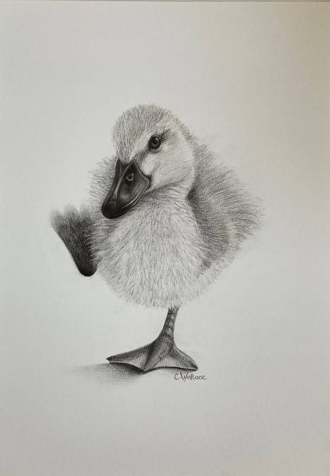
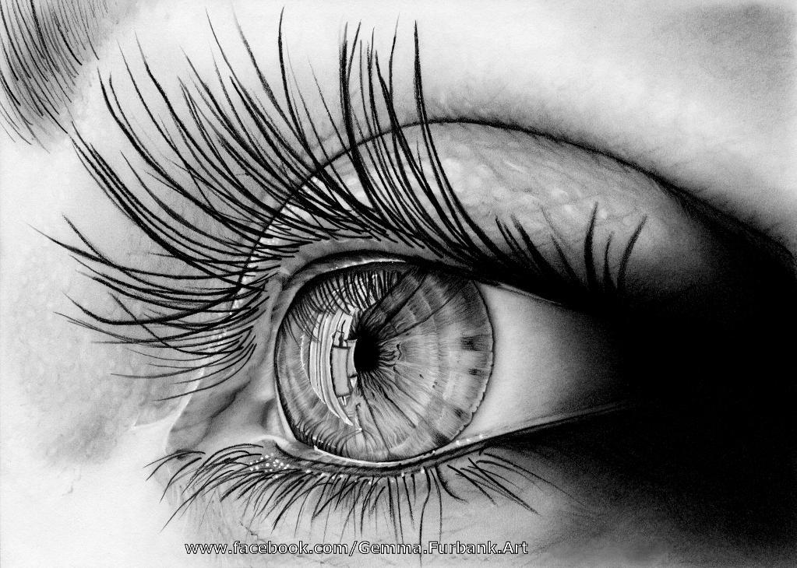
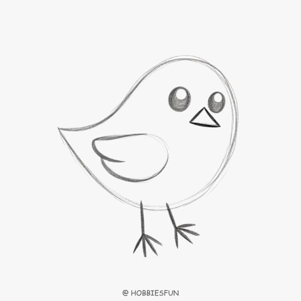

Home
For Beginners
Supplies
Types of Drawings
Advanced
⭐︎Advanced drawings⭐︎
Advanced drawings require precision, creativity, and a deep understanding of techniques like shading, perspective, and composition!


